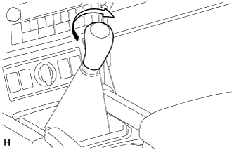

ГЕНЕРАТОР ЭЛЕКТРОННОГО КЛЮЧА (передний напольный) > УСТАНОВКА |
| 1. УСТАНОВИТЕ ВНУТРЕННЮЮ АНТЕННУ ЭЛЕКТРОННОГО КЛЮЧА № 1 В СБОРЕ |
Введите в зацепление захват, чтобы установить внутреннюю антенну электронного ключа № 1 в сборе.
| 2. УСТАНОВИТЕ ОБЛИЦОВКУ ПАНЕЛИ ПОЛА В СБОРЕ (для моделей с механической трансмиссией) |
Подсоедините все разъемы.
Введите в зацепление 8 фиксаторов и 2 захвата и установите облицовку панели пола.
| 3. УСТАНОВИТЕ ПАНЕЛЬ КОНСОЛИ (для моделей с автоматической трансмиссией) |
Подсоедините все разъемы.
Введите в зацепление 8 фиксаторов и 2 захвата и установите облицовку панели пола.
| 4. УСТАНОВИТЕ РУКОЯТКУ РЫЧАГА ПЕРЕКЛЮЧЕНИЯ ПЕРЕДАЧ В СБОРЕ (для моделей с механической трансмиссией) |
|  |
Установите рукоятку рычага переключения передач и поверните ее в направлении, указанном стрелкой.
| 5. УСТАНОВИТЕ РУКОЯТКУ РЫЧАГА ПЕРЕКЛЮЧЕНИЯ ПЕРЕДАЧ В СБОРЕ (для моделей с автоматической трансмиссией) |
 |
Установите рукоятку рычага переключения передач и поверните ее в направлении, указанном стрелкой.
Установите чехол лючка рычага переключения передач на рукоятку рычага переключения передач.
| *1 | Чехол лючка рычага переключения передач |
| 6. УСТАНОВИТЕ ПЕРЕДНЮЮ НАКЛАДКУ ВЕРХНЕЙ ОБЛИЦОВКИ ПАНЕЛИ ПОЛА |
Введите в зацепление 5 фиксаторов, чтобы установить переднюю накладку верхней облицовки панели пола.
| 7. УСТАНОВИТЕ ЛЕВУЮ ОТДЕЛОЧНУЮ НАКЛАДКУ ПАНЕЛИ ПРИБОРОВ |
Введите в зацепление 4 фиксатора, чтобы установить крайнюю отделочную накладку панели приборов.
| 8. УСТАНОВИТЕ ПРАВУЮ ОТДЕЛОЧНУЮ НАКЛАДКУ ПАНЕЛИ ПРИБОРОВ |
Подсоедините разъем.
Введите в зацепление 4 фиксатора, чтобы установить крайнюю отделочную накладку панели приборов.
| 9. УСТАНОВИТЕ ПОДУШКУ ОТДЕЛОЧНОЙ НАКЛАДКИ ПАНЕЛИ ПРИБОРОВ № 2 |
Введите в зацепление 5 фиксаторов, чтобы установить подушку отделочной накладки панели приборов № 2.
| 10. УСТАНОВИТЕ ПОДУШКУ ОТДЕЛОЧНОЙ НАКЛАДКИ ПАНЕЛИ ПРИБОРОВ № 1 |